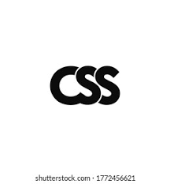
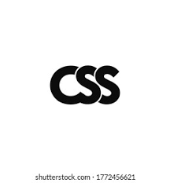

soy alejandro mosquera tecnico en sistemas con enfasis en desarrollo web y mantenimiento de computadores y redes informaticas, con experiencia en la realizacion de proyectos que requieren habilidades para el trabajo en equipo, y competencias para desarrollar productos de calidad relacionados con la produccion del sofware, el analisis, creacion y solucion de problemas que incluyan las TIC

 
